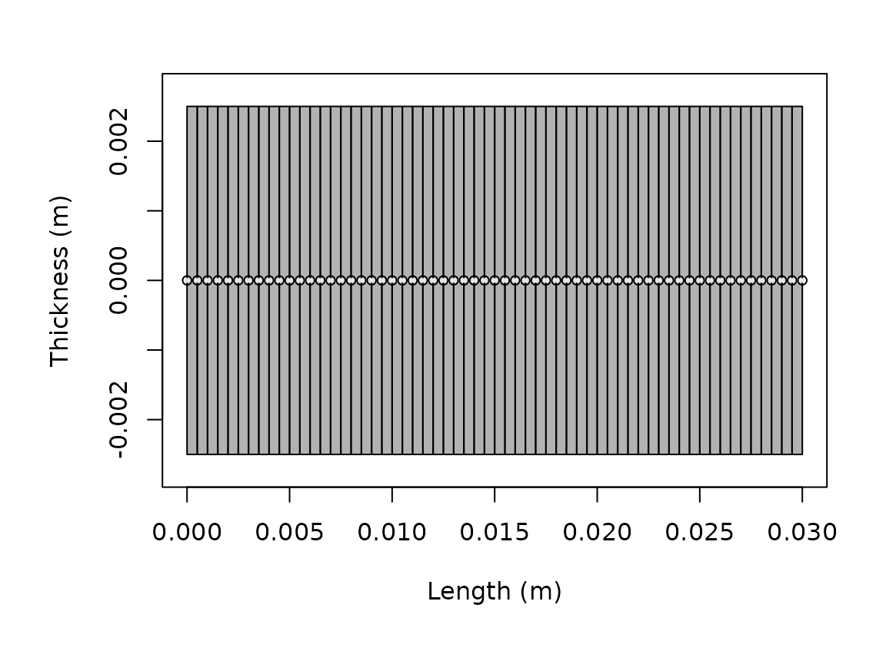

Running target strength models
Source:vignettes/running-models/running-models.Rmd
running-models.RmdIntroduction
The execution patterns shown here are designed to make it easy to reproduce the same kinds of spectra and angle-series comparisons reported in benchmark and software papers (Jech et al. 2015; Gastauer, Chu, and Cox 2019).
Model execution in acousticTS is organized around the target object rather than around detached parameter tables. A model reads the scatterer geometry and properties, applies a chosen theoretical or approximate formulation, and stores the resulting outputs back onto the object.
This article is the practical bridge between object construction and result interpretation. It does not try to explain the derivation of any one model. Instead, it explains how model calls are structured, how multiple models can be run on the same object, and how to interpret the stored output consistently.
The central point is that running a model is not just a calculation step. It is the point at which the package combines geometry, physical interpretation, acoustic conditions, and model assumptions into a specific prediction. Because of that, model execution deserves the same level of care as object construction. A result is only as meaningful as the object and the model assumptions that were combined to produce it.
The main entry point: target_strength()
Most workflows eventually pass through
target_strength():
library(acousticTS)
shape_obj <- cylinder(
length_body = 0.03,
radius_body = 0.0025,
n_segments = 60
)
scatterer_obj <- fls_generate(
shape = shape_obj,
density_body = 1045,
sound_speed_body = 1520,
theta_body = pi / 2
)
frequency <- seq(38e3, 120e3, by = 6e3)
scatterer_obj <- target_strength(
object = scatterer_obj,
frequency = frequency,
model = "dwba"
)The three core arguments are:
-
object, the scatterer to be modeled, -
frequency, usually a vector in Hz, -
model, one or more model names.
Additional arguments are model-specific and are forwarded through
.... For example, boundary matters for
SPHMS, PSMS, and FCMS, while
method matters for HPA, and stochastic
controls matter for SDWBA.
This structure is important because it makes the function call read like a compact statement of the modeling problem. The object says what the target is. The frequency vector says where the target is being interrogated acoustically. The model name says which physical approximation or exact solution family is being applied. Model-specific arguments then refine that statement rather than replacing it.
Shared and model-specific argument bundles
When only one model is being run, the ordinary ...
interface is usually sufficient. The more delicate case is when several
models are requested together. In that situation, some inputs are
genuinely shared across all requested models, while others belong only
to one model family.
target_strength() therefore supports both:
- shared arguments through
... - model-specific argument bundles through
model_args
comparison_obj <- target_strength(
object = scatterer_obj,
frequency = frequency,
model = c("dwba", "sdwba"),
density_sw = 1026,
sound_speed_sw = 1478,
model_args = list(
sdwba = list(
n_iterations = 100,
n_segments_init = 14,
phase_sd_init = sqrt(2) / 2,
length_init = 38.35e-3,
frequency_init = 120e3
)
)
)This pattern avoids duplicating truly shared inputs such as medium
properties, while keeping model-specific controls attached only to the
relevant model. If the same argument appears in both places, the entry
in model_args[[model_name]] takes precedence for that
model.
That is usually the safer pattern whenever the requested models share some argument names but not the full same interpretation of every keyword.
Typical outputs
Most models ultimately produce some combination of:
- complex backscattering amplitude,
-
sigma_bs, the backscattering cross-section, -
TS, the logarithmic target strength, - the frequency or acoustic-size domain used in the calculation.
Those quantities answer different questions. TS is
usually the reporting quantity, while sigma_bs and the
complex amplitude are often more useful when comparing mechanisms or
combining components.
Many models also store intermediate acoustic size quantities such as
ka, as well as model-specific outputs that are useful for
diagnostics. Because those fields differ by model, it is worth
inspecting the result once before building a larger workflow around
it.
This is one of the reasons direct extraction matters. A plotted curve may be all that is needed for a quick look, but the stored output often contains the information needed to understand why a model behaved the way it did. For careful comparison or later reuse, it is usually worth knowing exactly which variables a given model stores.
## [1] "frequency" "ka" "f_bs" "sigma_bs" "TS"
head(model_output)## frequency ka f_bs sigma_bs TS
## 1 38000 0.3979351 -6.723778e-05-1.940150e-20i 4.520919e-09 -83.44773
## 2 44000 0.4607669 -8.773690e-05-2.931388e-20i 7.697764e-09 -81.13635
## 3 50000 0.5235988 -1.097965e-04-4.168663e-20i 1.205527e-08 -79.18823
## 4 56000 0.5864306 -1.328846e-04-5.650686e-20i 1.765833e-08 -77.53050
## 5 62000 0.6492625 -1.564363e-04-7.364911e-20i 2.447231e-08 -76.11325
## 6 68000 0.7120943 -1.798640e-04-9.287346e-20i 3.235107e-08 -74.90111Running more than one model on the same object
One of the strengths of the package is that several models can be run on the same target description. That is particularly useful when the question is about sensitivity to model assumptions rather than about obtaining only a single curve.
comparison_obj <- fls_generate(
shape = shape_obj,
density_body = 1045,
sound_speed_body = 1520,
theta_body = pi / 2
)
comparison_obj <- target_strength(
object = comparison_obj,
frequency = frequency,
model = c("dwba", "hpa")
)
names(extract(comparison_obj, "model"))## [1] "DWBA" "HPA"This works because target_strength() initializes the
requested model, stores its parameterization in
model_parameters, then stores the result in
model. The original object remains the anchor that keeps
geometry, material properties, and results tied together.
That design makes model comparison much cleaner than a workflow built around disconnected result tables. When several models are run on the same object, the geometry and material assumptions remain fixed in one place. This reduces the chance that a model comparison is accidentally turned into a comparison of slightly different targets.
When the same multi-model call needs distinct controls,
model_args keeps those differences explicit without forcing
every extra argument into the shared ... bundle. That is
especially helpful when one requested model needs additional stochastic,
numerical, or boundary-condition inputs that the others do not use.
Choosing a model call
The package supports both exact modal solutions and approximations. The correct choice depends on geometry, boundary condition, and acoustic regime. The practical screening guide is choosing a model. The mathematical derivations live in the model-specific theory pages.
At a workflow level, there are a few recurring patterns:
-
DWBAandSDWBAare natural for weak fluid-like elongated targets. -
TRCMandFCMSare natural for cylindrical targets. -
SPHMSis natural for spherical boundary-value problems. -
PSMSis natural for prolate spheroids when exact spheroidal structure matters. -
ESSMSandcalibrationare used when shell or calibration-sphere physics are central.
The key practical mistake to avoid is choosing a model because the name sounds familiar rather than because the geometry and boundary assumptions match the object.
At the execution stage, this usually means pausing long enough to ask a few questions before running the call:
- Is the object geometry actually compatible with the chosen model family?
- Does the boundary or material interpretation match the physics I care about?
- Is the selected frequency range inside a regime where this model is intended to be informative?
- If the model has numerical controls, have I chosen values that are at least reasonable as a first pass?
That short check often prevents a lot of downstream confusion.
Model-specific arguments
Some model calls require only the object, frequency, and model name. Others require additional inputs. A few representative patterns are:
# Sphere modal series with an explicit boundary condition
target_strength(gas_sphere, frequency, model = "sphms", boundary = "gas_filled")
# High-pass approximation with explicit method choice
target_strength(fls_obj, frequency, model = "hpa", method = "stanton")
# Stochastic DWBA with phase-variability controls
target_strength(
fls_obj,
frequency,
model = "sdwba",
n_iterations = 100,
n_segments_init = 14,
phase_sd_init = sqrt(2) / 2,
length_init = 38.35e-3,
frequency_init = 120e3
)When in doubt, the implementation pages are the best starting point because they show the model-specific arguments in context rather than in isolation.
This matters because many of those arguments are not merely optional toggles. They often encode real physical or numerical assumptions. A boundary condition changes the underlying scattering problem. A method choice selects between approximation formulas. A numerical setting can determine whether a truncated modal system is being solved robustly enough for interpretation. Reading those arguments in context is therefore much safer than treating them as anonymous function options.
Verbose mode and debugging
For larger workflows, verbose = TRUE is useful because
it prints the initialization and execution stages. That can help
distinguish between object-construction problems, model-compatibility
problems, and post-processing problems.
target_strength(
object = scatterer_obj,
frequency = frequency,
model = "dwba",
verbose = TRUE
)Interpreting the result
After a model is run, the updated scatterer object can be inspected
with extract() or plotted with
plot(..., type = "model"). That makes it easy to compare
multiple models or to keep geometry and modeled output together.
plot(scatterer_obj, type = "shape")
plot(scatterer_obj, type = "model")The important practical rule is to compare like with like. If two model outputs are to be compared, they should usually be compared on the same object, the same frequency grid, and the same reporting quantity.
It is also worth checking whether the output is being interpreted in
the right domain. For many reporting tasks, TS is the
natural quantity. For coherent addition, residual analysis, or
mechanism-level interpretation, linear quantities such as
sigma_bs or the complex amplitude may be more informative.
A run can be numerically fine and still be inspected in the wrong domain
for the scientific question.
When a model should be re-run
Because model outputs are stored back onto the object, it is easy to forget that any substantive change to geometry, material properties, orientation, frequency grid, or model arguments requires a new run. The stored result does not update automatically just because an upstream object or variable in the workflow has changed.
As a practical rule, a model should be re-run whenever:
- the geometry or segmentation changes,
- any contrast or material property changes,
- the frequency vector changes,
- the model name changes, or
- a model-specific argument such as
boundary,method,phi_body,n_integration, orprecisionchanges.
Treating the stored result as tied to a specific run configuration helps keep later comparisons honest.
Common pitfalls
The most common execution problems are not numerical failures. They are setup mismatches. Typical examples are:
- using a model that is incompatible with the object class or shape,
- mixing contrasts and absolute properties inconsistently,
- forgetting that frequencies are in Hz,
- forgetting to re-run a model after changing geometry or material properties,
- comparing outputs from different frequency grids as if they were pointwise comparable.
This is one reason the package stores model outputs back on the object: it keeps the geometry and the result attached to the same record.
Another common pitfall is over-interpreting the first successful run. A run that completes without error is only the beginning of interpretation. It should still be checked for model compatibility, plausible magnitude, stability under modest numerical refinement when relevant, and consistency with the intended target description.